今天，你想讓誰吃飽？
01 / 12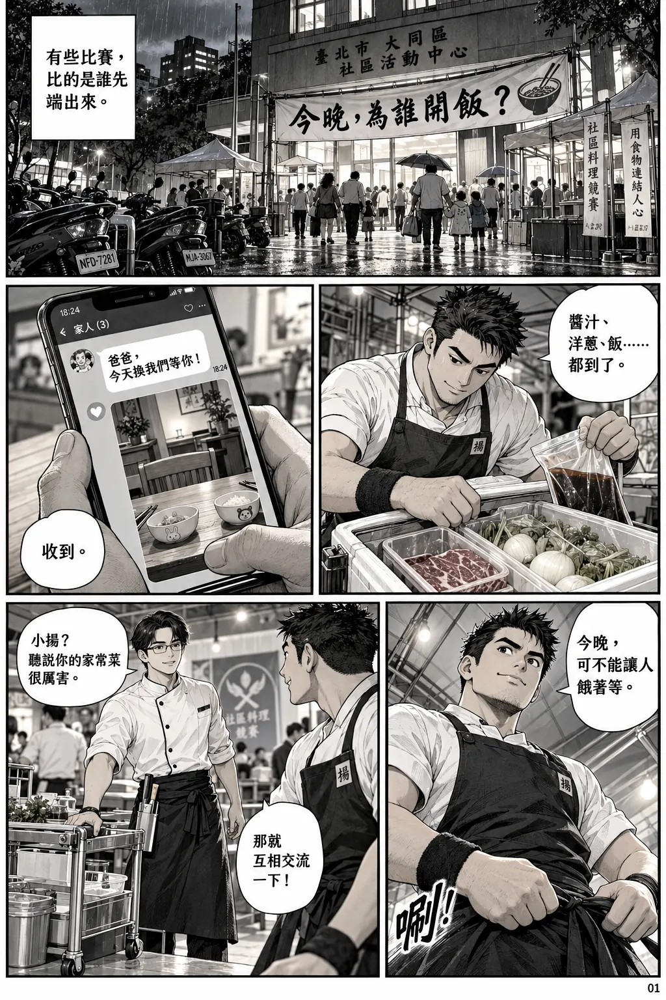
放大閱讀 ↗
本頁對白文字版
- 1-1 動作：居民提著環保餐具入場，志工引導。
旁白：「有些比賽，比的是誰先端出來。」
音效：人聲「嗡——」；不要塞滿攤販文字。 - 1-2 動作：他確認備料清單，嘴角帶笑。
小揚：「醬汁、洋蔥、飯……都到了。」 - 1-3 訊息：「爸爸，今天換我們等你！」
小揚畫外音：「收到。」 - 1-4 小揚：「今晚，可不能讓人餓著等。」
音效：「唰！」 - 1-5 阿岳：「小揚？聽說你的家常菜很厲害。」
小揚：「那就互相交流一下！」
翻頁鉤子：兩人視線相接，不使用挑釁式邪笑。
兩種上桌時間
02 / 12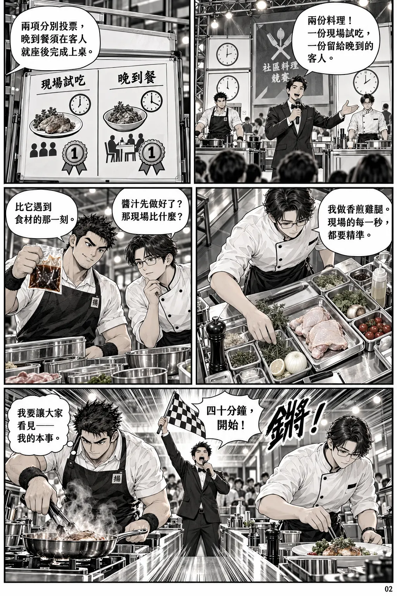
放大閱讀 ↗
本頁對白文字版
- 2-1 主持人：「兩份料理！一份現場試吃，一份留給晚到的客人。」
- 2-2 主持人畫外音：「兩項分別投票，晚到餐須在客人就座後完成上桌。」
小字美術註：規則不要求把熟食放著等待；允許安全備料、到場再做最後烹調。 - 2-3 阿岳：「我做香煎雞腿。現場的每一秒，都要精準。」
- 2-4 阿岳：「醬汁先做好了？那現場比什麼？」
小揚：「比它遇到食材的那一刻。」 - 2-5 主持人：「四十分鐘，開始！」
音效：「鏘！」
頁尾小揚內心：「我要讓大家看見——我的本事。」
被掌聲帶走的節奏
03 / 12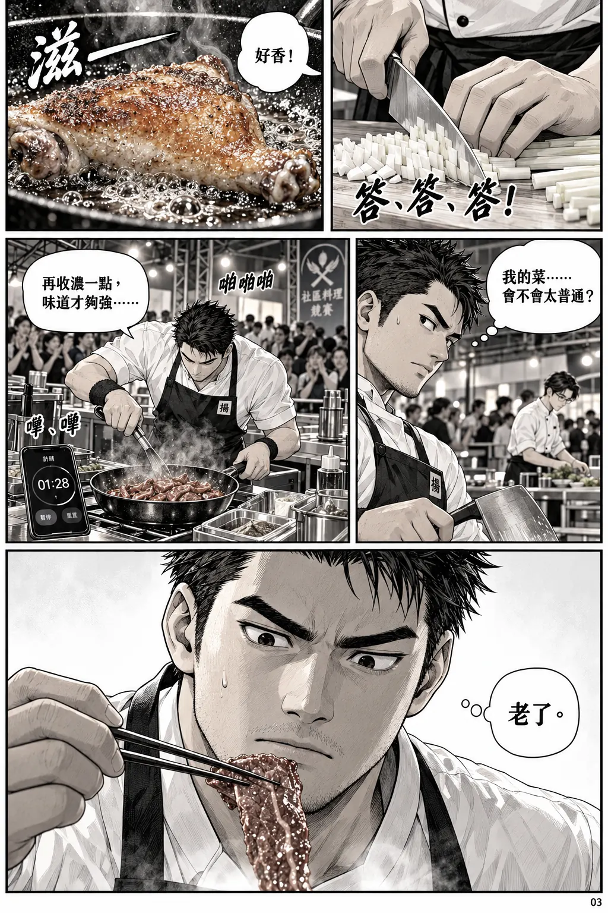
放大閱讀 ↗
本頁對白文字版
- 3-1 音效：「答、答、答！」
無對白。 - 3-2 音效：「滋——」
觀眾畫外音：「好香！」 - 3-3 小揚內心：「我的菜……會不會太普通？」
- 3-4 音效：「嗶、嗶」與遠處「啪啪啪啪」。
小揚：「再收濃一點，味道才夠強……」 - 3-5 小揚內心：「老了。」
無音效，讓上一格的聲音在此消失。
翻頁鉤子：小揚眉心一滴汗，不能把失誤畫成食安事故。
空椅子
04 / 12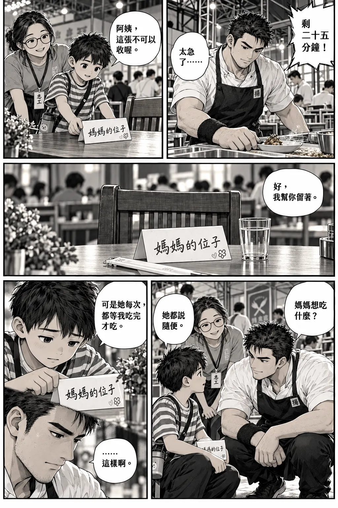
放大閱讀 ↗
本頁對白文字版
- 4-1 小揚：「太急了……」
遠處主持人：「剩二十五分鐘！」 - 4-2 紙卡：「媽媽的位子」。
阿禾：「阿姨，這張不可以收喔。」 - 4-3 志工阿姨畫外音：「好，我幫你留著。」
無音效。 - 4-4 小揚：「媽媽想吃什麼？」
阿禾：「她都說隨便。」 - 4-5 阿禾：「可是她每次，都等我吃完才吃。」
小揚畫外音：「……這樣啊。」
翻頁鉤子：小揚表情由焦急轉為安靜。
把最難的，先做完
05 / 12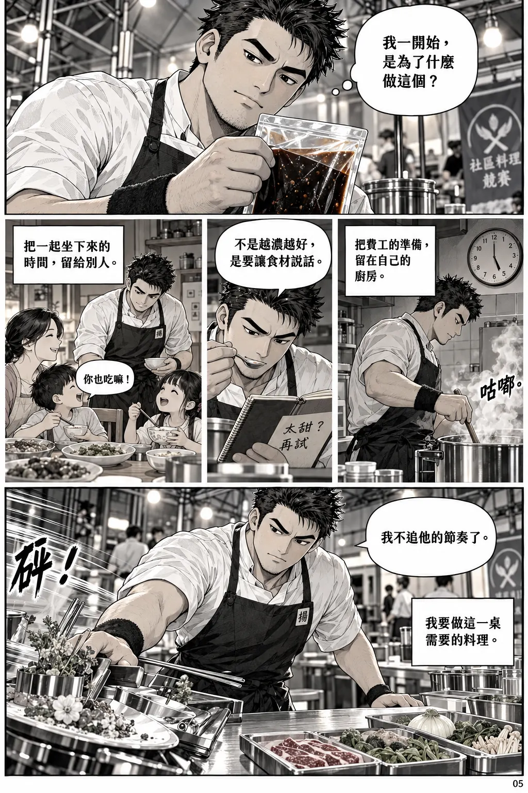
放大閱讀 ↗
本頁對白文字版
- 5-1 小揚內心：「我一開始，是為了什麼做這個？」
- 5-2 旁白：「把費工的準備，留在自己的廚房。」
音效：「咕嘟、咕嘟。」 - 5-3 小揚：「不是越濃越好，是要讓食材說話。」
- 5-4 旁白：「把一起坐下來的時間，留給別人。」
孩子：「你也吃嘛！」 - 5-5 小揚：「我不追他的節奏了。」
頁尾內心：「我要做這一桌需要的料理。」
洋蔥，起音！
06 / 12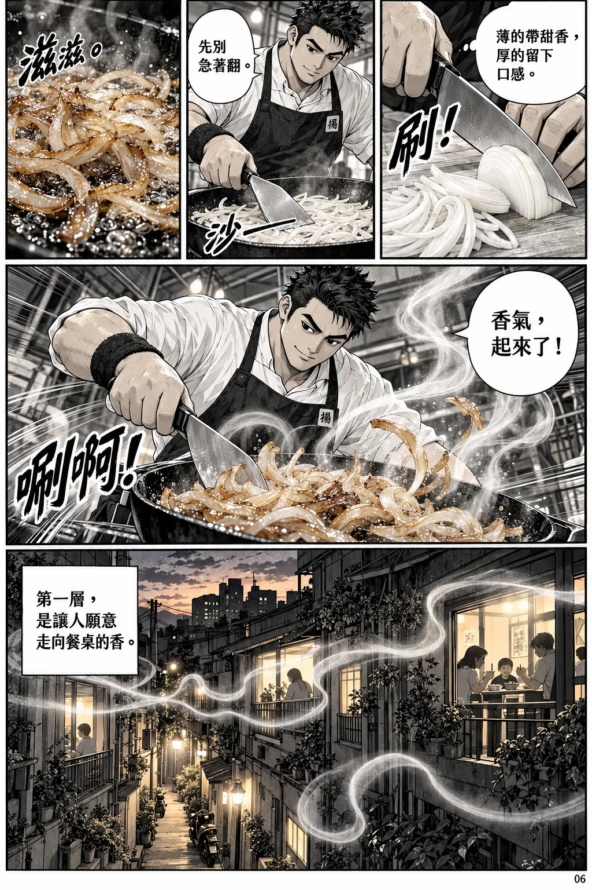
放大閱讀 ↗
本頁對白文字版
- 6-1 小揚內心：「薄的帶甜香，厚的留下口感。」
音效：「刷！」 - 6-2 音效：「沙——」
小揚：「先別急著翻。」 - 6-3 音效：「滋滋……」
無對白。 - 6-4 小揚：「香氣，起來了！」
音效：「唰啊！」 - 6-5 旁白：「第一層，是讓人願意走向餐桌的香。」
翻頁鉤子：光帶延伸到下一頁醬汁流線。
醬汁不是終點
07 / 12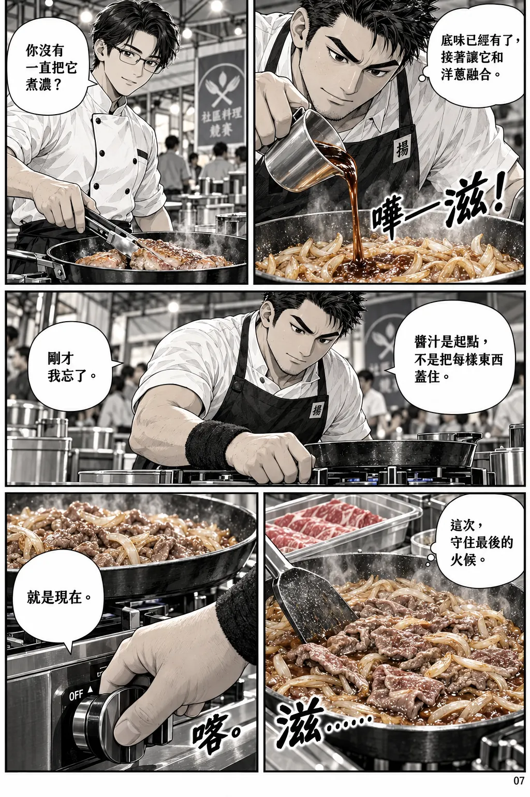
放大閱讀 ↗
本頁對白文字版
- 7-1 音效：「嘩——滋！」
小揚內心：「底味已經有了，接著讓它和洋蔥融合。」 - 7-2 阿岳：「你沒有一直把它煮濃？」
- 7-3 小揚：「醬汁是起點，不是把每樣東西蓋住。」
小揚：「剛才我忘了。」 - 7-4 小揚內心：「這次，守住最後的火候。」
音效：「滋……」 - 7-5 音效：「喀。」
小揚：「就是現在。」
翻頁鉤子：前段轟烈聲音停下，讓盛飯聲接續。
一口，打開一扇窗
08 / 12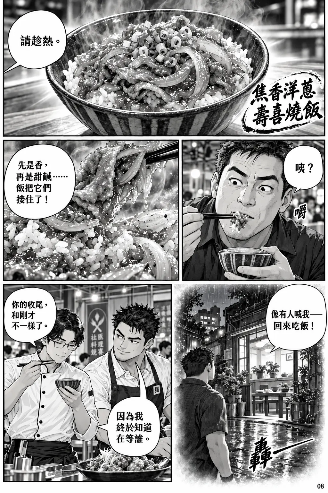
放大閱讀 ↗
本頁對白文字版
- 8-1 菜名字幕：「焦香洋蔥壽喜燒飯」。
小揚畫外音：「請趁熱。」 - 8-2 試吃者：「咦？」
音效：小小「嚼」。 - 8-3 試吃者畫外音：「先是香，再是甜鹹……飯把它們接住了！」
- 8-4 試吃者：「像有人喊我——回來吃飯！」
音效：「轟——」以白色字嵌入光中。 - 8-5 阿岳：「你的收尾，和剛才不一樣了。」
小揚：「因為我終於知道在等誰。」
還沒到的那一位
09 / 12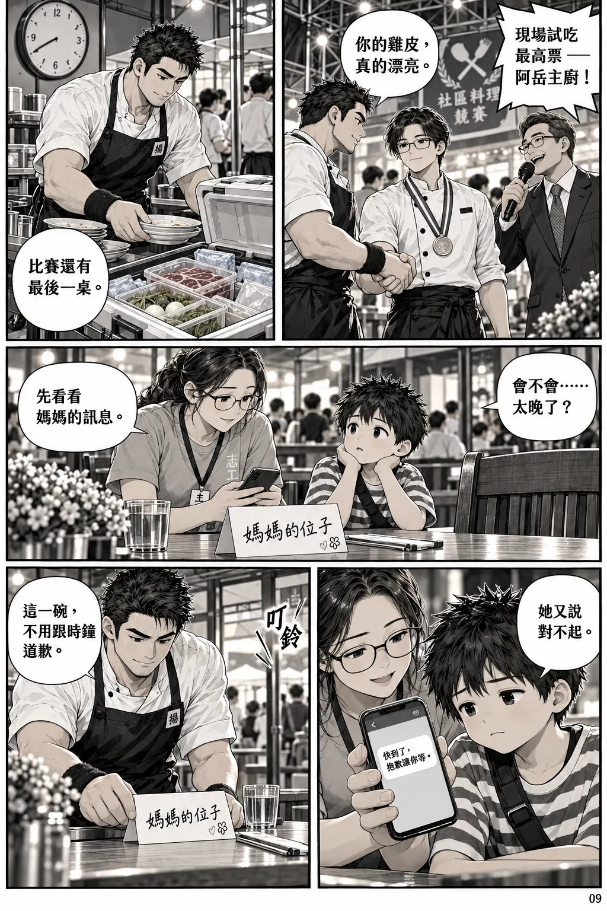
放大閱讀 ↗
本頁對白文字版
- 9-1 主持人：「現場試吃最高票——阿岳主廚！」
小揚：「你的雞皮，真的漂亮。」 - 9-2 旁白：「比賽還有最後一桌。」
- 9-3 阿禾：「會不會……太晚了？」
志工阿姨：「先看看媽媽的訊息。」 - 9-4 阿禾：「她又說對不起。」
- 9-5 小揚：「這一碗，不用跟時鐘道歉。」
翻頁鉤子：門口鈴聲從畫外響起：「叮鈴」。
最後的火候，是等待
10 / 12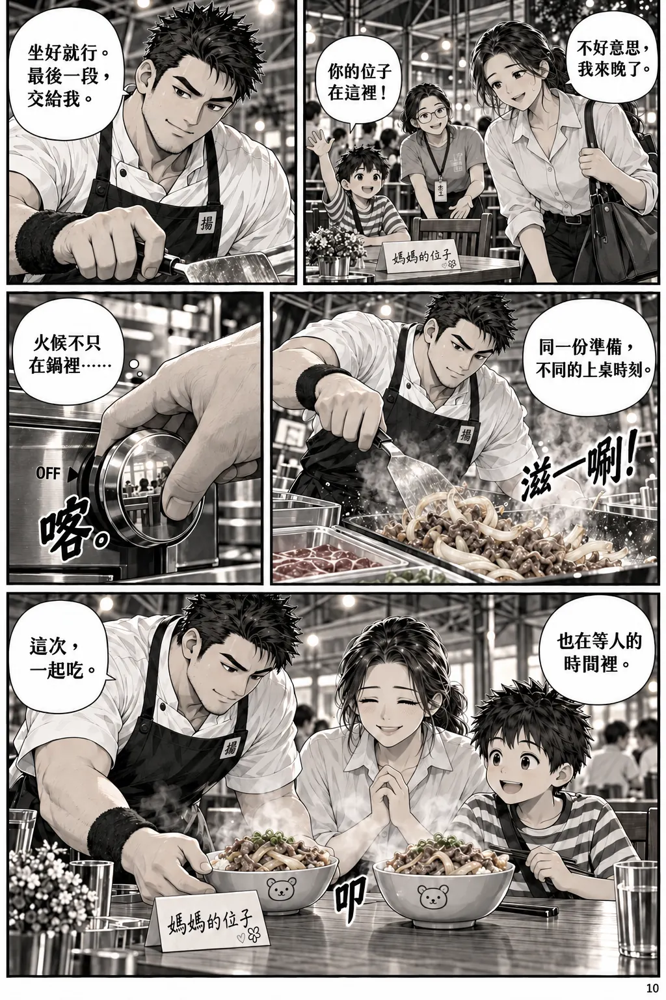
放大閱讀 ↗
本頁對白文字版
- 10-1 媽媽：「不好意思，我來晚了。」
阿禾：「你的位子在這裡！」 - 10-2 小揚：「坐好就行。最後一段，交給我。」
- 10-3 音效：「滋——唰！」
旁白：「同一份準備，不同的上桌時刻。」 - 10-4 音效：「喀。」
小揚內心：「火候不只在鍋裡……」 - 10-5 小揚內心：「也在等人的時間裡。」
小揚：「這次，一起吃。」
不加喝采音效，讓碗落桌的「叩」成為主聲。
不是只有一種贏法
11 / 12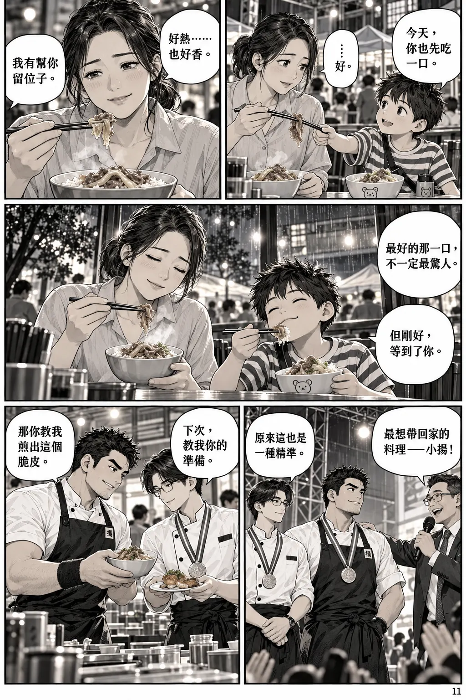
放大閱讀 ↗
本頁對白文字版
- 11-1 阿禾：「今天，你也先吃一口。」
媽媽：「……好。」 - 11-2 媽媽：「好熱……也好香。」
阿禾畫外音：「我有幫你留位子。」 - 11-3 旁白：「最好的那一口，不一定最驚人。」
旁白：「但剛好，等到了你。」 - 11-4 主持人：「最想帶回家的料理——小揚！」
阿岳：「原來這也是一種精準。」 - 11-5 阿岳：「下次，教我你的準備。」
小揚：「那你教我煎出這個脆皮。」
這次，換你坐下來
12 / 12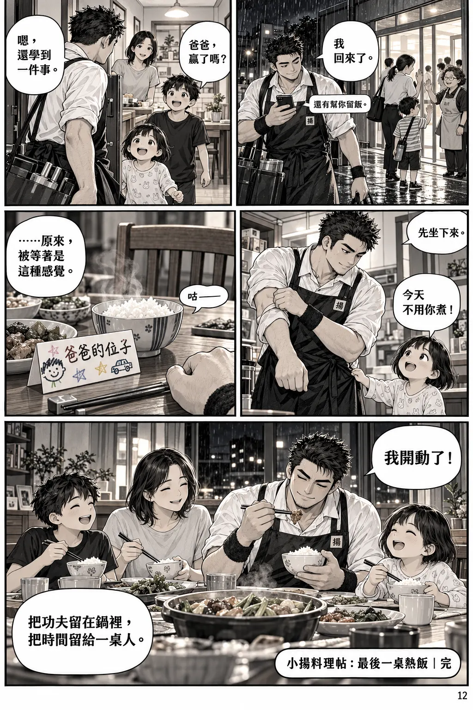
放大閱讀 ↗
本頁對白文字版
- 12-1 小揚手機訊息：「還有幫你留飯。」
小揚：「我回來了。」 - 12-2 孩子甲：「爸爸，贏了嗎？」
小揚：「嗯，還學到一件事。」 - 12-3 孩子乙：「今天不用你煮！」
伴侶畫外音：「先坐下來。」 - 12-4 小揚：「……原來，被等著是這種感覺。」
音效：「咕——」從他肚子傳來，留一點喜感。 - 12-5 小揚：「我開動了！」
旁白：「把功夫留在鍋裡，把時間留給一桌人。」
頁角落款：「小揚料理帖：最後一桌熱飯｜完」。
不放購買 QR code、聯絡方式或強迫性的廣告口號，讓故事有完整結尾。
關於這本漫畫
這是以現代台灣生活為背景的原創料理漫畫。人物、家庭、比賽與菜色均屬虛構，並非真人經歷或現售商品介紹。品牌靈感參考阿揚私廚的公開網站。畫面由 AI 生成，以黑白墨線、網點與料理意象為主，局部保留少量點色；人物和器物細節可能有藝術化差異。
圖片採高壓縮 WebP，附手機版本與逐頁放大。本站不使用外部字型、廣告或追蹤器。小螢幕若覺得對白太細，請點漫畫開啟原尺寸放大。